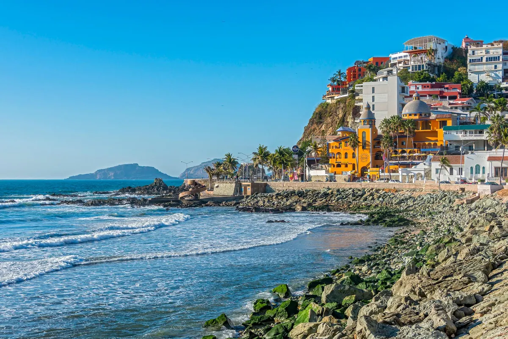
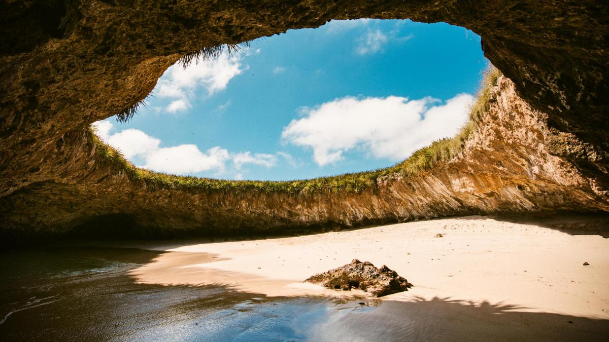

Uma das praias mais belas da região do México e bastante conhecida, por quem visita o País. esta praia fica próxima ao centro de Culíacan. Há relatos de turistas que dizem que é o entardecer mais bonito já visto em suas vidas. Porém cuidado aos turistas pois é uma aréa de risco por conta da criminalidade do local. Mas a beleza da praia e suas peculiaridades chamam bastante atenção.
Onde fica a famosa praia escondida no México: também conhecida como “Playa del Amor”, está localizada no Parque Nacional Islas Marietas, no estado de Nayarit. Trata-se de duas ilhas de origem vulcânica, uma se chama Isla Larga e a outra Isla Redonda. A Praia Escondida no México está na Isla Redonda e conta com uma atmosfera paradisíaca com uma areia muito fina e águas cristalinas. A praia recebeu esse nome porque só pode ser vista de cima, somente com registro aéreo.
A melhor época para ir até a praia escondida no México é do dia 5 de dezembro até o dia 23 de março, pois são os meses que as baleias Jubarte viajam até este local. Por isso, além de curtir um passeio incrível, você também poderá ver estes gigantes em grande número. Inesquecível! A única coisa que você deve levar em consideração é que durante esta temporada as ilhas são muito frequentadas por turistas nacionais e estrangeiros. Por isso, planeja bem a sua viagem!